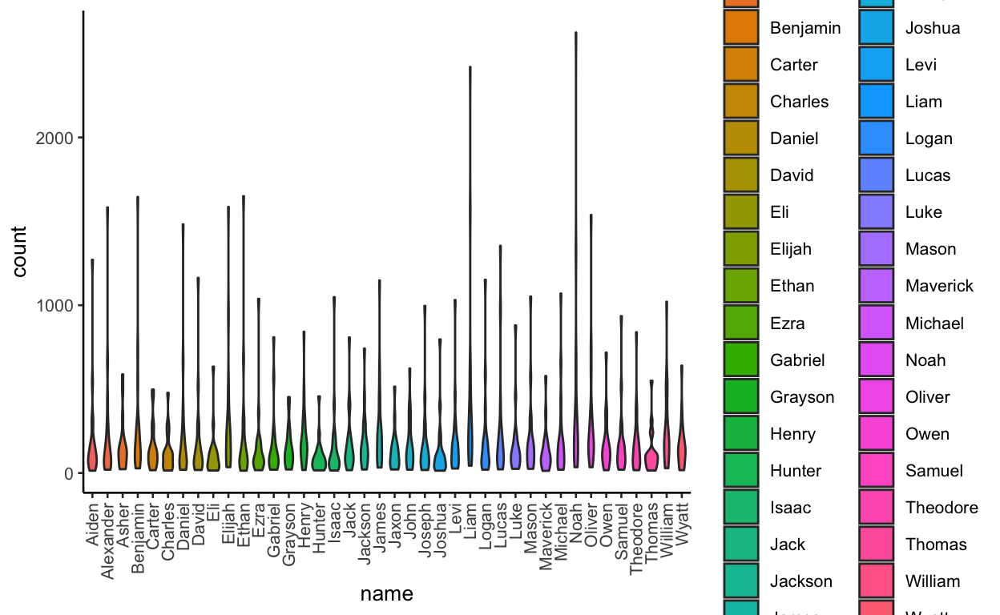

The Rmarkdown for this class is on github
Before we get started, let’s download all of the files you will need for the next three classes.
# conditionally download all of the files used in rmarkdown from github
source("https://raw.githubusercontent.com/rnabioco/bmsc-7810-pbda/main/_posts/2022-11-10-class-7-matricies/download_files.R")A Matrix is an 2 dimensional object in R. We create a matrix using the matrix function
[,1] [,2] [,3]
[1,] 10 11 12
[2,] 13 14 15
[3,] 16 17 18
[4,] 19 20 21We can also use as.matrix on an existing dataframe
df <- data.frame("A" = c(10:13), "B" = c(14:17), "C" = (18:21))
df A B C
1 10 14 18
2 11 15 19
3 12 16 20
4 13 17 21new_mat <- as.matrix(df)
new_mat A B C
[1,] 10 14 18
[2,] 11 15 19
[3,] 12 16 20
[4,] 13 17 21Just like data frames, we can name the rows and columns of the Matrix
rownames(new_mat) <- c("first", "second", "third", "forth")
colnames(new_mat) <- c("D", "E", "F")
new_mat D E F
first 10 14 18
second 11 15 19
third 12 16 20
forth 13 17 21We can look at the structure of the matrix using str
str(new_mat) int [1:4, 1:3] 10 11 12 13 14 15 16 17 18 19 ...
- attr(*, "dimnames")=List of 2
..$ : chr [1:4] "first" "second" "third" "forth"
..$ : chr [1:3] "D" "E" "F"Here you can see that the type of this structure is int because it is a matrix consisting of integers. We can also see the row names and column names.
As with data frames, we can check the size of the matrix using nrow, ncol and dim
We can also access data using brackets[
Selecting a single value:
new_mat[1,2][1] 14Selecting a section of the matrix:
new_mat[1:3,2] first second third
14 15 16 If we don’t provide an index for the row, R will return all rows:
new_mat[, 3] first second third forth
18 19 20 21 The same is true for the columns
new_mat[3,] D E F
12 16 20 Because this matrix has row and column names, we can also pull out data based on those
new_mat["second", "D"][1] 11Exercise
What value is in row 2 and column 3 of new_mat?
# TODO find the value in the matrix at row 2 and column 3If we can make a matrix from a data frame, what’s the difference? Matrices can only have values of one type –> integer, boolean, character, while a dataframe can be a mix of types:
df <- data.frame("A" = c(10:12),
"B" = c("cat", "dog", "fish"),
"C" = c(TRUE, TRUE, FALSE))
df A B C
1 10 cat TRUE
2 11 dog TRUE
3 12 fish FALSEM <- as.matrix(df)
M A B C
[1,] "10" "cat" "TRUE"
[2,] "11" "dog" "TRUE"
[3,] "12" "fish" "FALSE"But Matrices can take any type of input
[,1] [,2]
[1,] TRUE FALSE
[2,] TRUE FALSE
[3,] TRUE FALSE
[4,] TRUE FALSEtypeof(M[,1])[1] "logical"If you’ve taken linear algebra, you’ve probably worked with matrices before. These same matrix operations can be done in R
We can do any of the mathematical operations for a matrix and one value. For example, we can add 5 to all values in a matrix, or subtract 2, or divide by 10
[,1] [,2] [,3]
[1,] 10 11 12
[2,] 13 14 15
[3,] 16 17 18
[4,] 19 20 21M + 1 [,1] [,2] [,3]
[1,] 11 12 13
[2,] 14 15 16
[3,] 17 18 19
[4,] 20 21 22M + 2 [,1] [,2] [,3]
[1,] 12 13 14
[2,] 15 16 17
[3,] 18 19 20
[4,] 21 22 23M - 5 [,1] [,2] [,3]
[1,] 5 6 7
[2,] 8 9 10
[3,] 11 12 13
[4,] 14 15 16M / 3 [,1] [,2] [,3]
[1,] 3.333333 3.666667 4
[2,] 4.333333 4.666667 5
[3,] 5.333333 5.666667 6
[4,] 6.333333 6.666667 7M * 10 [,1] [,2] [,3]
[1,] 100 110 120
[2,] 130 140 150
[3,] 160 170 180
[4,] 190 200 210We can also provide a vector or another matrix to perform element-wise functions with.
vector <- c(2, 3, 4, 5)
M + vector [,1] [,2] [,3]
[1,] 12 13 14
[2,] 16 17 18
[3,] 20 21 22
[4,] 24 25 26Here you can see that each element of the vector is added to a row ie element 1 is added to row 1, element 2 is added to row 2, etc.
The same is true for subtraction
M - vector [,1] [,2] [,3]
[1,] 8 9 10
[2,] 10 11 12
[3,] 12 13 14
[4,] 14 15 16And multiplication and division
M / vector [,1] [,2] [,3]
[1,] 5.000000 5.500000 6.0
[2,] 4.333333 4.666667 5.0
[3,] 4.000000 4.250000 4.5
[4,] 3.800000 4.000000 4.2M * vector [,1] [,2] [,3]
[1,] 20 22 24
[2,] 39 42 45
[3,] 64 68 72
[4,] 95 100 105What happens if there are a different number of rows as elements in the vector?
vector <- c(2, 3, 4)
M [,1] [,2] [,3]
[1,] 10 11 12
[2,] 13 14 15
[3,] 16 17 18
[4,] 19 20 21M + vector [,1] [,2] [,3]
[1,] 12 14 16
[2,] 16 18 17
[3,] 20 19 21
[4,] 21 23 25Note how the vector just gets reused, no error is thrown.
We can also perform these operations on two matrices
[,1] [,2] [,3]
[1,] 10 11 12
[2,] 13 14 15
[3,] 16 17 18
[4,] 19 20 21M2 [,1] [,2] [,3]
[1,] 110 111 112
[2,] 113 114 115
[3,] 116 117 118
[4,] 119 120 121M1 + M2 [,1] [,2] [,3]
[1,] 120 122 124
[2,] 126 128 130
[3,] 132 134 136
[4,] 138 140 142Note how elements in the same position of each matrix are added together
Note this also is true of vectors
v3 <- c(5, 6)
v1 + v3[1] 6 8 8v4 <- c(10, 11, 12, 13, 14, 15)
v1 + v4[1] 11 13 15 14 16 18Exercise
Multiply, subtract, and divide the two matrices M1 and M2
# TODO multiply, subtract and divide M1 and M2We will only briefly touch on matrix multiplication, but one reason matrices are very important in R is that you can perform multiplication with them. Exactly how this is done is explained nicely in a math is fun tutorial.
Let’s try to multiply two matrices together. Remember our first matrix has 4 rows and 3 columns:
dim(M)[1] 4 3So our new matrix must have 3 rows
[,1] [,2] [,3] [,4] [,5]
[1,] 5 6 7 8 9
[2,] 10 11 12 13 14
[3,] 15 16 17 18 19Let’s perform matrix multiplication with these
M %*% M2 [,1] [,2] [,3] [,4] [,5]
[1,] 340 373 406 439 472
[2,] 430 472 514 556 598
[3,] 520 571 622 673 724
[4,] 610 670 730 790 850So far, a matrix has looked a lot like a dataframe with some limitations. One of the places where matrices become the most useful is performing statistical functions because all items in a matrix are of the same type.
For this next section, let’s use some data that I downloaded from the social security office. This has the top 100 boy and girl names by state for 2020.
We can now read in the data and convert it to a matrix
names_mat <- read.csv(here("class_7-9_data", "boy_name_counts.csv"),
row.names = 1) %>%
as.matrix()
names_mat[1:5, 1:5] Alabama Alaska Arizona Arkansas California
William 366 36 174 152 1021
James 304 34 215 105 1148
John 267 20 97 94 623
Elijah 254 42 284 143 1586
Noah 243 35 397 138 2625Above you can see that we have the number of males with each name in each state. Looking at the structure, we can see that it is an integer matrix.
str(names_mat) int [1:40, 1:20] 366 304 267 254 243 207 187 183 173 166 ...
- attr(*, "dimnames")=List of 2
..$ : chr [1:40] "William" "James" "John" "Elijah" ...
..$ : chr [1:20] "Alabama" "Alaska" "Arizona" "Arkansas" ...We can now explore this data set using many of the functions you have already learned such as rowSums and colSums
First, lets find the sum for all of the rows - how many total babies were named each name?
rowSums(names_mat) William James John Elijah Noah Liam Mason
5067 5005 3295 5921 8118 8512 4040
Oliver Henry Jackson Samuel Jaxon Asher Grayson
5961 4121 3599 3549 2571 3212 2938
Levi Michael Carter Benjamin Charles Wyatt Thomas
3717 4061 3017 5265 2427 3255 2475
Aiden Luke David Owen Daniel Logan Joseph
3872 3230 3554 3369 4223 3933 3356
Lucas Joshua Jack Alexander Maverick Gabriel Ethan
4794 2645 3399 4530 2588 3091 4322
Eli Isaac Hunter Ezra Theodore
2202 3029 1940 2999 3409 And then the columns - how many babies were included from each state?
colSums(names_mat) Alabama Alaska Arizona Arkansas California
5687 986 7371 3428 41256
Colorado Connecticut Delaware Florida Georgia
6396 4211 1117 21661 11791
Hawaii Idaho Illinois Indiana Iowa
1111 2306 13407 8283 3508
Kansas Kentucky Louisiana Maine Maryland
3630 5518 4955 1372 6617 What if we want to find the percent of children with a given name across all states (divide the value by the row sum * 100) - what percent of total babies for each name came from each state:
percent_mat <- names_mat / rowSums(names_mat) * 100
percent_mat[1:5, 1:5] Alabama Alaska Arizona Arkansas California
William 7.223209 0.7104796 3.433985 2.999803 20.14999
James 6.073926 0.6793207 4.295704 2.097902 22.93706
John 8.103187 0.6069803 2.943854 2.852807 18.90744
Elijah 4.289816 0.7093396 4.796487 2.415133 26.78602
Noah 2.993348 0.4311407 4.890367 1.699926 32.33555Remember from above that division using a vector will divide every element of a row by one value, so we can only do this using rowSums. In a few minutes we will discuss how do do this on the columns.
We can also find the minimum, maximum, mean, and median values of the whole matrix and any column. First, lets get summary data for the whole matrix using summary
summary(names_mat)[ , 1:3] Alabama Alaska Arizona
Min. : 61.00 Min. :14.00 Min. : 84.0
1st Qu.: 94.75 1st Qu.:18.00 1st Qu.:143.8
Median :125.00 Median :22.50 Median :174.5
Mean :142.18 Mean :24.65 Mean :184.3
3rd Qu.:163.00 3rd Qu.:28.00 3rd Qu.:191.2
Max. :366.00 Max. :44.00 Max. :451.0 You can see that this calculates the min, max, mean, median, and quartiles for the columns.
What if we just want the minimum value for the “Alabama” names? We can run min while subsetting to just the column of interest
min(names_mat[, "Alabama"])[1] 61We can do the same for the rows Lets try this for “William”
min(names_mat["William",])[1] 29What if we wanted to find the smallest value in the whole matrix?
min(names_mat)[1] 13max works the same as min
Exercise Find the maximum value in the for “Noah”
# TODO Find the maximum value in the second row and the whole matrixWe can also find the mean, median, and standard deviation of any part of the matrix
By row:
mean(names_mat["William", ])[1] 253.35median(names_mat["William", ])[1] 178sd(names_mat["William", ])[1] 239.8189By column:
mean(names_mat[ , "Alabama"])[1] 142.175median(names_mat[ , "Alabama"])[1] 125sd(names_mat[ , "Alabama"])[1] 67.66012One important quality of a matrix is being able to transpose it to interchange the rows and columns - here the rows become columns and columns become rows. We transpose using t() to the matrix. Let’s first look at this using the matrix we started with
[,1] [,2] [,3]
[1,] 10 11 12
[2,] 13 14 15
[3,] 16 17 18
[4,] 19 20 21t(M) [,1] [,2] [,3] [,4]
[1,] 10 13 16 19
[2,] 11 14 17 20
[3,] 12 15 18 21Note that the output of transposing either a matrix or a data frame will be a matrix (because the type within a column of a data frame must be the same).
df A B C
1 10 cat TRUE
2 11 dog TRUE
3 12 fish FALSEt(df) [,1] [,2] [,3]
A "10" "11" "12"
B "cat" "dog" "fish"
C "TRUE" "TRUE" "FALSE"str(df)'data.frame': 3 obs. of 3 variables:
$ A: int 10 11 12
$ B: chr "cat" "dog" "fish"
$ C: logi TRUE TRUE FALSE chr [1:3, 1:3] "10" "cat" "TRUE" "11" "dog" "TRUE" "12" "fish" ...
- attr(*, "dimnames")=List of 2
..$ : chr [1:3] "A" "B" "C"
..$ : NULLNote how after the transposition, all items in the original df are now characters and we no longer have a dataframe.
Now let’s try this transposition on the names matrix we’ve been working with
transposed_mat <- t(names_mat)
transposed_mat[1:3,1:3] William James John
Alabama 366 304 267
Alaska 36 34 20
Arizona 174 215 97Note how the columns are now names and the rows are now states.
Remember the note above where we could only divide by the rowSums? Now we can use this transposition to figure out the percent of children in each state with a given name (divide the value by the column sum * 100)
state_percents <- transposed_mat / rowSums(transposed_mat) * 100
state_percents <- t(state_percents)
state_percents[1:3, 1:3] Alabama Alaska Arizona
William 6.435731 3.651116 2.360602
James 5.345525 3.448276 2.916836
John 4.694918 2.028398 1.315968Above we did this in several steps, but we can also do in in one step:
state_percents_2 <- t(t(names_mat) / colSums(names_mat)) * 100
identical(state_percents, state_percents_2)[1] TRUEWe can also use matrices to perform statistical tests, like t-tests. For instance, are the names Oliver and Noah, or Oliver and Thomas used different amounts?
First, let’s normalize the data to account for the fact that each state reported different numbers of births. To do this normalization, let’s first divide each value by the total number of children reported for that state. Remember, we need to first transpose the matrix to be able to divide by the colSums
Now that we have normalized values, we can do a t-test.
normalized_mat["Oliver", 1:3] Alabama Alaska Arizona
0.03217865 0.04361055 0.04124271 normalized_mat["Noah", 1:3] Alabama Alaska Arizona
0.04272903 0.03549696 0.05385972 normalized_mat["Thomas", 1:3] Alabama Alaska Arizona
0.02092492 0.02028398 0.01329535 t.test(normalized_mat["Oliver",], normalized_mat["Noah",])
Welch Two Sample t-test
data: normalized_mat["Oliver", ] and normalized_mat["Noah", ]
t = -1.1861, df = 36.481, p-value = 0.2433
alternative hypothesis: true difference in means is not equal to 0
95 percent confidence interval:
-0.010275411 0.002689617
sample estimates:
mean of x mean of y
0.04133411 0.04512700 Between Oliver and Noah, there does not seem to be a difference with the data we have. What about Oliver and Thomas?
t.test(normalized_mat["Oliver",], normalized_mat["Thomas",])
Welch Two Sample t-test
data: normalized_mat["Oliver", ] and normalized_mat["Thomas", ]
t = 9.3268, df = 21.544, p-value = 5.121e-09
alternative hypothesis: true difference in means is not equal to 0
95 percent confidence interval:
0.01858464 0.02922945
sample estimates:
mean of x mean of y
0.04133411 0.01742706 Here we can see that there is a difference between the mean values for Oliver and Thomas using a t.test
For many of the tidyverse functions you’ve learned so far, a data frame is required. Fortunately, it is very easy to change between a data frame and a matrix.
normalized_dat <- data.frame(normalized_mat)
str(normalized_dat)'data.frame': 40 obs. of 20 variables:
$ Alabama : num 0.0644 0.0535 0.0469 0.0447 0.0427 ...
$ Alaska : num 0.0365 0.0345 0.0203 0.0426 0.0355 ...
$ Arizona : num 0.0236 0.0292 0.0132 0.0385 0.0539 ...
$ Arkansas : num 0.0443 0.0306 0.0274 0.0417 0.0403 ...
$ California : num 0.0247 0.0278 0.0151 0.0384 0.0636 ...
$ Colorado : num 0.0369 0.0364 0.0211 0.0317 0.0408 ...
$ Connecticut: num 0.0356 0.0359 0.0302 0.024 0.0503 ...
$ Delaware : num 0.0269 0.0322 0.0251 0.0403 0.0466 ...
$ Florida : num 0.0244 0.0278 0.018 0.0436 0.0608 ...
$ Georgia : num 0.0469 0.0369 0.0317 0.0446 0.0494 ...
$ Hawaii : num 0.0261 0.0297 0.0252 0.0342 0.0513 ...
$ Idaho : num 0.0412 0.0399 0.0173 0.0351 0.0308 ...
$ Illinois : num 0.0345 0.0334 0.023 0.0309 0.053 ...
$ Indiana : num 0.0333 0.0321 0.0164 0.0396 0.0391 ...
$ Iowa : num 0.0425 0.0296 0.0154 0.0299 0.0371 ...
$ Kansas : num 0.0342 0.0336 0.0226 0.0358 0.0372 ...
$ Kentucky : num 0.0448 0.0399 0.0268 0.0419 0.0379 ...
$ Louisiana : num 0.0367 0.0349 0.0367 0.0478 0.044 ...
$ Maine : num 0.0277 0.0248 0.016 0.0255 0.035 ...
$ Maryland : num 0.0328 0.0378 0.0213 0.0293 0.0533 ...Once we can move between matrices and data frames, we can start to tidy our data for plotting purposes. Let’s plot the distribution of name usage as a violin plot. Here we want the counts to be the y axis and the names to be the y axis.
The first thing we need to do is make our matrix into a data frame
names_dat <- data.frame(names_mat)Next, we will want the names to be a column rather than the row names. We can do this using $ or tibble::rownames_to_column
names_dat <- rownames_to_column(names_dat, "name")
names_dat[1:3,1:3] name Alabama Alaska
1 William 366 36
2 James 304 34
3 John 267 20# To set using $
# names_dat$name <- rownames(names_dat)Next, we need to pivot_longer from tidyr. We want to take everything but the names column
pivot_columns <- colnames(names_dat)[colnames(names_dat) != "name"]
names_dat <- pivot_longer(names_dat, cols = all_of(pivot_columns),
names_to = "state", values_to = "count")Note, we can use the pipe %>% from dplyr to put all of this into one statement.
# Here we will specify the columns to keep first
pivot_columns <- colnames(names_mat)
names_dat <- names_mat %>%
data.frame %>%
rownames_to_column("name") %>%
pivot_longer(cols = all_of(pivot_columns),
names_to = "state", values_to = "count")With this new data frame, we can now plot the distribution of names
# I first set the theme
theme_set(theme_classic(base_size = 10))
ggplot(names_dat, aes(x = name, y = count,
fill = name)) +
geom_violin() +
theme(axis.text.x = element_text(angle = 90,
vjust = 0.5, hjust=1)) # rotate x axis
There are a few outliers here, almost certainly California. As we discussed above, normalizing the data helps put everything onto the same scale.
Exercise Can you make the same plot as above but use our normalized values?
# TODO make plot above with normalized values
# Hint start with normalized_datDESeq2The content of this class borrows heavily from previous tutorials: